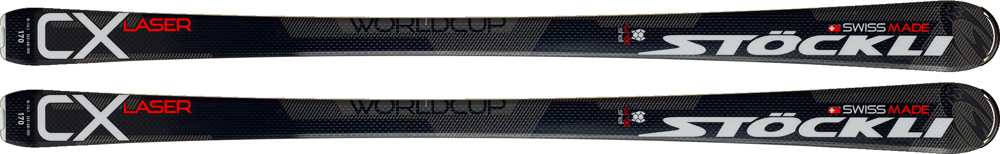

Каталог
Stockli Spirit Globe
Эти карвинговые лыжи со спортивным характером
гарантируют невероятное удовольствие от управления
в различных снежных условиях.
Подробное описание здесь
Stockli Y85
Широкая лопатообразная передняя часть и узкая талия делают эти лыжи многофункциональными – вы сможете в полной мере насладиться катанием как по трассе, так и вне трасс.
Подробное описание здесьStockli Spirit Evo

Если Вам нравится элегантно и стильно скользить по склону, то это модель для Вас! Совместив великолепный дизайн с удивительными характеристиками лыжи, вы с легкостью поразите всех на склоне своим катанием!
Подробное описание здесьStockli Laser CX
Невероятно комфортные и простые в управлении лыжи со спортивным характером. Отлично подходят для катания короткими, а также средними и длинными дугами.
Подробное описание здесь
Stockli Laser SC
Универсальные лыжи в плане катания длинными и короткими дугами. Это значит, что они вроде как и для слалома, но немного попрямее в геометрии и помягче. Можно поездить и гигант при ростовке побольше.
Подробное описание здесьStockli Stormrider 97

Это настоящий универсал, - стабильная конструция
и адаптированная ширина талии делает доставляет
удовольствие при катании на любом типе склона.
Подробное описание здесь
Stockli Laser DH
Профессиональные спортивные лыжи для скоростного спуска. Созданы для победителей и готовы показать лучшее время на мировых серевнованиях!
Подробное описание здесь
Stockli Axis Motion
Эти лыжи с конструкцией Softflex обеспечивают невероятное удовольствие при размеренном катании по подготовленным склонам.
Подробное описание здесь
Stockli Race Team
Эти лыжи прекрасно дополнят снаряжение самого маленького спортсмена.
Подробное описание здесь